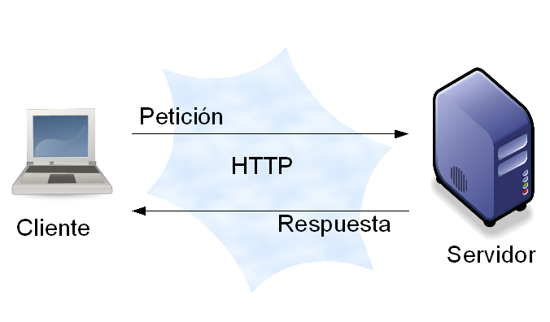
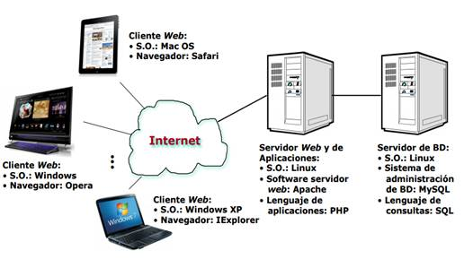

En el desarrollo de entornos web, la configuración arquitectónica más habitual se basa en el modelo Cliente/Servidor, basado en la idea de servicio, en el que el cliente es un componente consumidor de servicios y el servidor es un proceso proveedor de servicios. Por tanto, tenemos los siguientes elementos:
- El lado del servidor(server-side): incluye el hardware y software del servidor Web así como diferentes elementos de programación y tecnologías incrustadas. A esta parte se le suele denominar también back-end (parte no visible de la web, como las bases de datos o scripts que se ejecutan en el servidor. Por tanto, en las empresas desarrolladoras de aplicaciones web, los técnicos del back-end se encargan de todo el proceso del lado del servidor: acceso a la base de datos (MySQL, MariaDB, PostgreSQL, MongoDB, Oracle, etc), creación de servicios etc. Estos técnicos programarán en lenguajes como PHP, Pyton, Java, Django, .NET etc. Ventajas: permite realizar tareas intensivas de cómputo, acceso a bases de datos y mantener la seguridad de datos sensibles en el servidor. Desventajas: mayor latencia y dependencia de la conexión.
- El lado del cliente(client-side): este elemento hace referencia a los navegadores web y está soportado por tecnologías como HTML, CSS y lenguajes como JavaScript y controles ActiveX, los cuales se utilizan para crear la presentación de la página o proporcionar características interactivas. . A esta parte se le conoce también como front-end (parte visible de una web) y hoy día con la ayuda de los frameworks, como AngularJS, ReactJS y otros, la parte del cliente está ganando terreno a la parte servidora. Ventajas: reduce la carga del servidor y mejora la experiencia del usuario al tener una respuesta más rápida. Desventajas: limitaciones de seguridad y capacidad, ya que la ejecución depende de los recursos del dispositivo del usuario.
- La red: describe los diferentes elementos de conectividad utilizados para mostrar el sitio web al usuario.


El esquema básico del modelo cliente-servidor sería el siguiente:
1. El cliente solicita una información al servidor.
2. El servidor recibe la petición del cliente.
3. El servidor procesa dicha solicitud.
4. El servidor envía el resultado obtenido al cliente.
5. El cliente recibe el resultado y lo procesa.